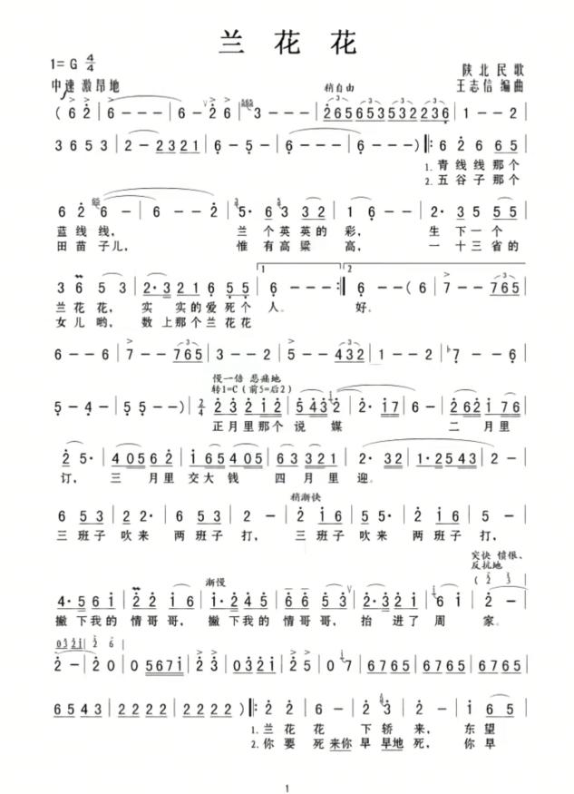
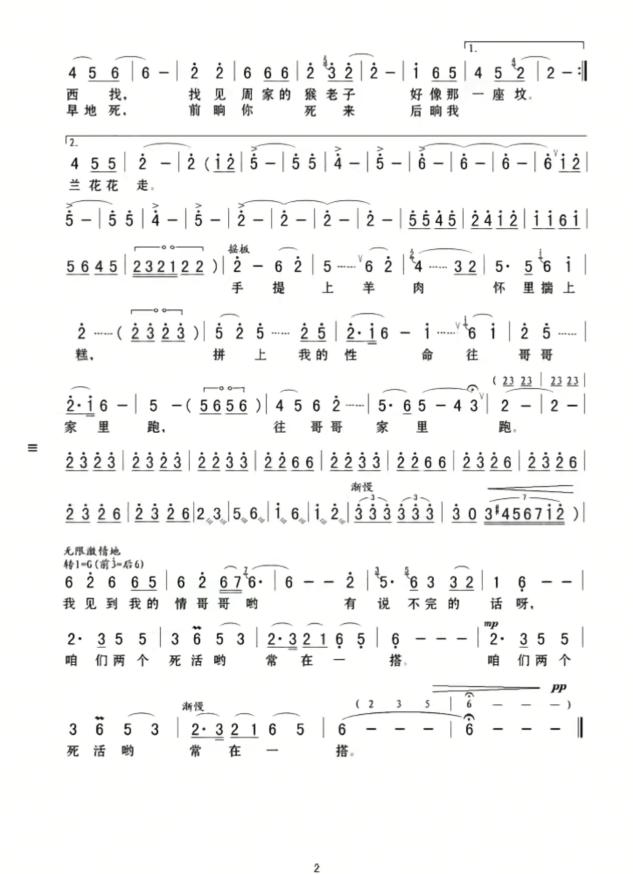

创作背景
《兰花花》是陕北经典信天游叙事民歌，属于民间集体口头创作。歌曲原型为陕北女子姬延玲，1919年出生于延安南川临镇街农民家庭。她心灵手巧、容貌俊秀，因喜爱穿蓝色底布上映有小百花的衣衫，被大家称为“兰花花”。
姬延玲与一名擅长文艺宣传的战士互生情愫，但在封建礼教与包办婚姻制度压迫下，被迫嫁入地主富户人家，婚姻不幸，最终不堪忍受命运的捉弄服毒自杀。其恋人归来后，运用信天游调式编创歌词，后经延安鲁艺音乐工作者收集整理并艺术加工，成为陕北民歌代表作。
音乐艺术特征
体裁为陕北信天游（山歌），通行记谱多采用五声羽调式，为上下两个乐句组成的单乐段四句体，节拍为2/4拍。每一段的结束句都呈下行进行，多数段落结束音落在主音羽上。情感层次丰富：前半段赞美兰花花的美丽纯真，旋律柔和深情；后半段情绪转为悲愤苍凉，控诉封建礼教对人的压迫，叙事感染力极强。
教学目标
知识目标：认识信天游体裁，掌握上下句结构特点，了解陕北民歌与人民生活紧密相连的特点。
技能目标：学习长线条气息控制，高音松弛演唱，避免挤嗓喊叫；用音色变化完成故事叙事。
情感目标：体会旧社会底层人民的苦难，感受民歌承载的人文情感，尊重民间音乐文化。
演唱处理
气息深长稳定，声音通透开阔。叙述人物外貌时音色温柔、抒情；讲述悲惨遭遇时，音色下沉、情绪凝重，突出故事的悲剧感。把握信天游自由舒展的韵律，不要生硬卡死节拍。
教学拓展
欣赏不同歌唱家演绎版本，对比处理差异；了解陕北黄土高原自然环境如何塑造信天游高亢悠长的音乐风格。
教学图片


